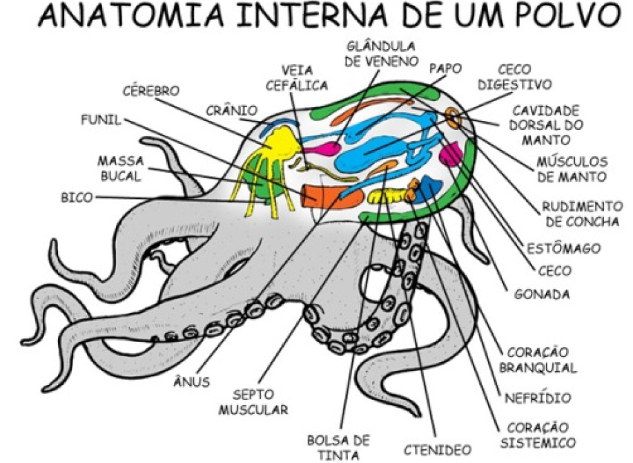

Características
Gerais
Esses animais apresentam o corpo dividido em: cabeça, pé e massa visceral. Na cabeça são encontrados os órgãos dos sentidos. O pé é responsável pelos movimentos e, em alguns animais, como o polvo, pode ser substituído pelos tentáculos. A massa visceral é onde encontram-se todos os órgãos.
Alimentação e Sistema Digestório
Os moluscos possuem um sistema digestivo completo, com boca e ânus. O alimento é conduzido pelo tubo digestivo, onde sofre a ação de enzimas. Os nutrientes são absorvidos e distribuídos pelo corpo por meio do sangue. Os cefalópodes e gastrópodes apresentam a rádula, uma espécie de língua com dentes afiados, usada para raspar os alimentos..
Respiração
Pelo fato dos moluscos serem encontrados em uma grande variedade de ambientes, eles apresentam diferentes tipos de respiração. A respiração branquial é realizada pelos moluscos que vivem na água, como os polvos, lulas e ostras. A respiração pulmonar está presente em moluscos que vivem em ambiente terrestre, como os caracóis. A respiração cutânea ocorre com as lesmas que também vivem em ambiente terrestre, sob o solo e em árvores.
Sistema Circulatório
O sistema circulatório distribui os nutrientes e oxigênio dos sistemas digestivo e respiratório. O sistema excretor retira resíduos metabólicos e os elimina. O sistema circulatório é aberto, e o coração situa-se dorsalmente na massa visceral. As contrações do coração enviam para o corpo, o sangue que flui para os vasos e depois por lacunas situadas entre os tecidos.
Reprodução
Os moluscos apresentam reprodução sexuada, com fecundação interna ou externa. A maioria dos moluscos apresenta sexos separados, com exceção dos bivalves que são hermafroditas. Na fecundação externa, os machos liberam os espermatozóides e as fêmeas liberam os óvulos diretamente na água, onde os dois gametas se encontram. No caso da fecundação interna, os espermatozoides são liberados dentro do corpo da fêmea.

BIVALDES
Bivalves:
Ambiente: Marinho.
Estrutura: Dois conchas articuladas e unidas por um ligamento.
Exemplos: Mariscos, ostras e vieiras.
Anatomia:
Corpo: Composto pelo pé e pela massa visceral.
Pé: Pequeno ou ausente.
Cavidade do Manto: Espaço entre as conchas onde ocorre a filtração da água.
Sistema de Filtração:
Sifão de Entrada: Água entra por este sifão.
Cavidade do Manto: Água passa e partículas ficam presas no muco das brânquias e cílios.
Sifão de Saída: Água sai do corpo por este sifão.
Características Adicionais:
Cabeça e Rádula: Ausentes.
Representantes: Ostras, mariscos e mexilhões.
CEFALÓPODES
Cefalópodes:
Concha: Ausente ou interna.
Exemplos: Polvo, lula e náutilos.
Complexidade: São os moluscos mais complexos.
Sistema Nervoso e Visão::
Desenvolvimento: Sistema nervoso altamente desenvolvido.
Olhos: Semelhantes aos dos vertebrados.
Tentáculos:
Número: Oito nos polvos e dez nas lulas.
Função: Possuem ventosas para capturar presas ou prender-se a substratos, como rochas.
Glândula de Tinta:
Localização: Ligada ao intestino no polvo.
Função: Expele tinta para confundir predadores e facilitar a fuga.
Classificação:
Tipo de Animal: Invertebrados aquáticos.
Comparação: Cefalópodes e bivalves.
.png)